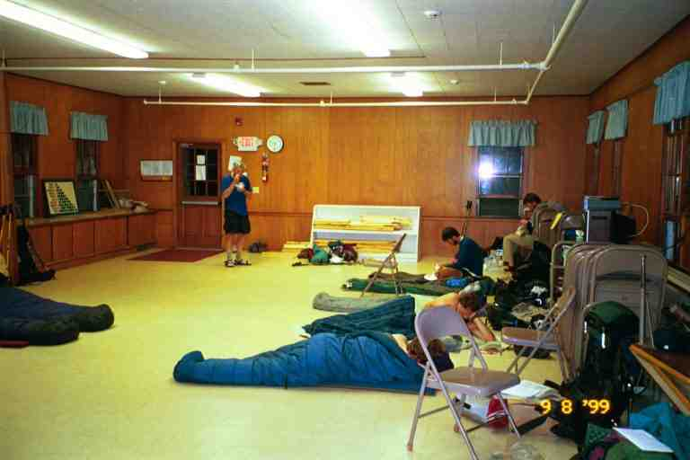
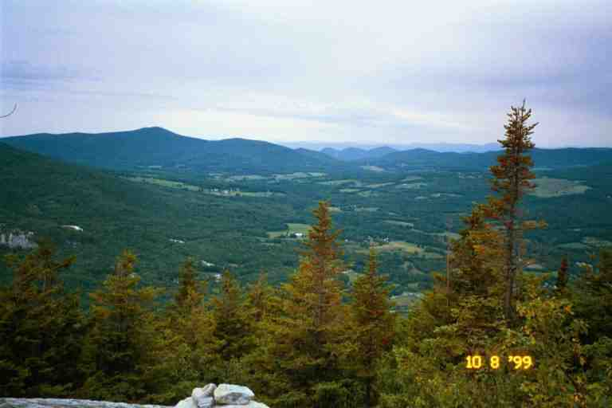

Early in the morning on August 7, our 147th day, the lady in the night-gown dropped us off at the trailhead above Bennington Vt. MA felt better after the day and a half break. She figured that the medication had tired her out.
We were glad to be back on the trail but were a little melancholic. The uncertainty of MA's health hung over us and we had undoubtedly lost another group of friends during our stop. The dull skies and the dark damp woods certainly did not help our mood. On the other hand, the cool weather and soft earth underfoot made walking easier.
The trail tested us immediately with a steep 600 foot ascent over a distance of 0.5 miles but the trail builders had kindly made generous use of switchbacks so it was not too strenuous. It continued to climb another 800 feet over the next 1.5 miles before dropping slightly into a hollow and then climbing another 1000 feet to the top of Little Pond Mountain. The walking was mostly in the woods, coming into the open once in a while, especially to get views from the edge of the mountain.
JILEBI describes this area as follows: (http://trailplace.com/c99journals/315james/315james_index.html) ***The forest is changing. There are more different types of conifers for one and their fresh scent is always a pleasure. there are no mountain laurel to be seen. I suddenly realize that I don't even remember when I saw them last. The pale birch barks are now familiar as well as the smooth gray birch trees. The blue fruits of the Yellow Clintonias are everywhere together with Club Mosses and Indian Pipes. I don't hear the cheery calls of the Rufous Sided Towhees anymore. I will surely miss them. There are new bird calls to identify but the canopy makes it almost impossible task to see the birds.***
At the 7.6 mile mark we arrived at Glastenbury Lookout where we got a view across the valley to Goddard shelter a further 2.5 miles up the trail. We arrived at Goddard shelter in late afternoon. It is a large beautiful shelter with a view of Mount Greylocks in the distance. We spent a little time relaxing and talking to some day hikers and section hikers before going on. We continued on to Kid Gore shelter, completing a 14.4 mile day. A few months before, SEMPER FI DREW claimed that Al Gore had built this shelter when he was a kid. We are pretty sure that he was joking. The shelter was situated at the edge of a sloping hill giving us a great view of the mountains around us. Another thru hiker showed up but then continued on, so we spent the night alone, our only night alone in a shelter. The next day was rainy and misty. The first 8 miles consisted in lots of small ups and downs until we reached a road and then we started the 1700 foot climb up Stratton Mountain. It was a long tough climb up the mountain in the rain.. It was cool and windy and very foggy. There were a couple of steep rocky sections which were tricky in the rain. We arrived on top in a thick fog and walked by a caretaker's cabin. He came over and showed us where the trail took a sharp turn and headed back down the mountain. We followed the AT but if we had continued on another 0.8 miles, we would have come to a ski patrol cabin, a public washroom and the top end of a ski gondola. The operators of the ski hill let hikers stay in the cabin. There were amenities such as a heater and a microwave and hikers could use the phone at no charge. The gondola was in operation for tourists. Thru hikers were given free rides down to the town of Stratton for supplies and the AYCE buffet at a local restaurant.
One of the reasons we missed the ski cabin was that it was getting late in the afternoon and the cold damp foggy weather had us a little worried. Our destination was a shelter 3 miles down the mountain and we did not take the time to consult our material. It was fortunate that we did not, because there was a large crowd at the ski hut that night. PADDLER describes the crowding as follows (http://paddler99.trailstories.com/journal/):
***"Last night the 'warming hut' filled to over capacity! There were people sleeping in the bathroom building, two other summit buildings, and in the back of a snow-cat! Everyone was happy and out of the weather. A couple who are hiking the Long Trail came in late, totally exhausted and injured. I marvel at what some people do out here, and wonder that there are not more "emergency" rescues. They could have been in bad shape without the heated, dry shelter at the end of their day."*** (It turns out that it was CORSICAN and MOOSEBERGER that slept in the bathroom building.)
PADDLER had also been there the night before with a number of hikers and he and a few others stayed over because of the weather. STITCHES had also been there the night before but had headed down the mountain. Unknowing to us, we were close behind STITCHES and had just passed PADDLER.
The trail down the mountain was steep and wet, going through lush areas where the vegetation rubbed against us. Our clothes were wet and our boots and gaiters were muddy. We kept our jackets on as protection from the cold wind and rain but the exercise kept us feeling damp. The front of my jacket was slightly open to let the sweat evaporate.
We finally came to a stream and to our left we saw Stratton Pond. A side trail along the pond lead 0.2 miles to Vondell shelter and continued around the pond to a number of campsites. This was one of a number of sites in Vermont where the Green Mountain Club (GMC) has a caretaker on site and charges a fee of $5 to stay. The next free shelter was 8 miles away but we had done over 15 miles and we were tired and wet. We decided to stay and walked the rocky path along the edge of the pond.
We went past the large caretakers tent on a platform and he told us that there was room in the shelter. I had visions of a nice modern shelter but I was wrong. It was a standard three walled shelter about a foot off the ground with room for about 8. Unlike many such shelters there was no ledge or step in front so people had to step directly from the ground onto the sleeping area. Because the ground in front was muddy, the shelter was dirty. The fee and the bad conditions put me in a bad mood.
Huddled in the corner were a father and his teenage son who were doing a section hike. The son had got ill and they had spent a couple of days here. His cough sure sounded bad and I tried not to get too near. There were also a couple of southbounders in their thirties. I think they were teachers. One of them was in a foul mood during the entire time of our stay. He said that he would be getting off the trail because there were too many people on the trail, people talked too much at the shelters and it was not the quiet wilderness adventure he expected.
We tried to find places to hang our wet stuff on nails and wooden pegs along the back wall and on the front roof overhang. We cooked and did our chores on the edge of the shelter, all the while trying to not get mud everywhere. A few weekenders showed up and continued on to campsites around the pond. The caretaker then arrived and I grudgingly gave him $10. I read a little from the latest book I was carrying (at this point it was either The Client or First Wives Club which I had picked up at a shelter), and we then went to sleep. The next morning I awoke and noticed a tent lying flat on the ground some distance in front of the shelter. MA said that I had been snoring and that the "foul mood" hiker had got up in the middle of the night complaining about the noise and tried to put up his tent in the dark. He had not been successful.
The rain had stopped and the day started out cloudy but warm. Our destination was the town of Manchester Center, 10.5 miles away. The terrain was mostly flat and the walking relatively easy, allowing us to do the 7 miles to Spruce Peak shelter by early morning. This shelter is also managed by the GMC but there is no fee which is strange considering that it is actually a fully enclosed cabin with a door. There is no caretaker on site here but we met the young girl who is responsible for this shelter and a few others. I complained to her about the conditions and the fee at the previous shelter. We took a break on the front steps of the shelter.
I went to use the privy but changed my mind when I found it was full. The caretaker was behind the privy working on the composting operation, turning the contents of a large wooden box. She was being helped by her father who spending a few days in the woods with her. The GMC in Vermont and the Appalachian Mountain Club (AMC) in New Hampshire have a number of composting privies. I am not exactly sure how it all works but here is a brief description based on what we saw.
There is a bag of bark in the privies for the users to throw down the hole after use. The privies are above ground allowing for the contents to be removed by the caretakers. They then add more bark, stir, and transfer over time to a series of drying racks and boxes. Not a very pleasant task but the end result is much better than with the standard privies. This method is especially essential in heavily used rocky areas such as the White Mountains.
After leaving the shelter, we met a number of groups of young Southbounders. We stopped a number of times to talk to them. They were all in good humor and there was a strong sense of camaraderie, reminiscent of our first weeks on the trail. They had stayed at the hostel at the Zion Episcopal Church in Manchester Center and had left there that morning after sweeping and cleaning it. Their attitude and excitement were infectious and raised our sagging spirits.
BLACK BEAR caught up to us and we continued on to the road together. We crossed to a large paved trailhead parking lot enjoying the warmth of the sun in this open area. We decided that MA and I would try first for a ride to town 5.5 miles away. Soon a Jeep SUV stopped and we placed our stuff in back and got in the back seat behind a man and his 6 year old son. There was more room and we asked about BLACK BEAR, but the driver said there was no space.
The driver was very talkative on the way to town and said he would bring us to the church hostel. He said he was looking after someone's house and offered us a shower there. When we arrived in town, he suddenly veered into McDonalds saying he had to bring his son to lunch. We got out and decided to walk the remaining half mile to the hostel. It was a really strange experience, having him offer the shower and then stop before getting us to our goal. In any event we had a good hike, covering 10.5 miles and arriving in town by noon.
The town map in our Companion lead us right to the church hostel, located in the large congregational hall behind the church. Hikers could sleep on the tiled floor of the hall and a kitchen and showers were available. We picked a spot along one of the walls and spread out our sleeping pads and bags. We removed our boots, put on our sandals and walked to the restaurant situated next door.
It was a rather fancy restaurant situated in a converted older home. Since we had not showered we decided to have lunch outside. We were sitting at a table next to the wrought iron fence which ran along the sidewalk, when who should come up the street and lean on the fence next to us but our old friend PADDLER. We spent a relaxing two hours sharing a nice meal and draft beer with PADDLER and BLACK BEAR. Our spirits were lifted by the ambience.
That afternoon we purchased a few groceries then returned to the hostel where we hung some clothes out to dry on our hiking poles stuck in the grass and on a few nearby poles. We took our showers, relaxed and socialized with the hikers in the hostel. Some of the people here were ZAUGAU, SLOJOURNER, DICK CHRISTIAN and RICK ROCK. Also here were two thru hikers who were likely in their fifties: MOOSEBERGER and CORSICAN. MOOSEBERGER's brother in law John had joined them for a week or two. CORSICAN had a Spanish accent and said he chose his name from his ancestral background. MOOSEBERGER had a strong German accent. (Attached is a view of the hostel at bedtime. DICK CHRISTIAN is eating ice cream, a typical hiker activity)

Late in the afternoon we went to the nearby Ben and Jerry's store where hikers said we could get a free ice cream on a stick if we mentioned that we were thru hikers. They were right. I then bought a sundae. We returned to the hostel and decided to go for supper with BLACK BEAR and PADDLER at the local Friendly's. We had a thick milk shake with our meal and finished with a sundae. Never underestimate the appetite of a thru hiker.
The next morning the four of us returned to Friendly's for breakfast where we met a number of other hikers. We then went with PADDLER to catch a ride to the trail while BLACK BEAR ran some errands. We stood at the edge of the road for at least 45 minutes without any luck, so I waved down a taxi. The ride to the trail with the talkative older woman cost about $7. Before leaving Manchester Center I have to mention that the hostel closed for good after the 1999 hiking season. The Zion Church had been offering the service for a number of years but not all members of the congregation were in agreement. The church finally decided to devote their energies to other projects.
We immediately started the 3 mile climb up Bromley Mountain, gradually at first then up a sharp rise of 500 feet in the last 0.5 mile on a grassy ski run. We saw HUMBOLDT coming down the fire tower at the top. She said she had tented on the summit the night before. From the peak we could see Stratton Mountain 16 miles behind us. We had heard that there was an alpine slide on the other side of the mountain, but we did not go and try it out (and anyway it might have been too early). CABOOSE was through here the week before with SONGBIRD and others and they tried it out. Of course CABOOSE was reputed to have tried every ride and gone to every amusement park that was anywhere near the trail.
The trail then dropped down to Mad Tom Notch over the next 3 miles followed by a 1000 foot climb to Styles Peak. We walked across the mountain top to Peru Peak and descended down to Peru Peak shelter at the 10 mile mark where we took a break at a picnic table with PADDLER, BLACK BEAR, HUMBOLDT (with her dog) and WHARF RAT, and a few section hikers.
PADDLER and BLACK BEAR were aiming for Big Branch shelter 6.3 miles away. Lost Pond shelter was another possibility and was only 4.6 miles away so Ma and I were keeping our options open because it was cloudy and cool and getting late. We headed along the edge of Griffith lake for a short distance and went back into the woods. A number of times during the day we had walked on bog bridges called puncheons. About a quarter mile of the section around Griffith lake was on puncheons. It was like walking on a sidewalk.
We spotted HUMBOLDT and WHARF RAT taking a blue blazed alternate trail (Old Job Trail) that eventually made its way back to the AT. The map shows that route to be a little longer than the AT. They perhaps thought they would have more privacy at the Old Job shelter located on that trail.
We came to the short steep climb up Baker Peak. The last section was up sloping exposed flat rocks (JILEBI refers to it as quartzite) where the way was marked with a few rock cairns. When we reached the top, we met the klutzy hiker and his girlfriend from a few days before who were doing the Long Trail. They were talking with another couple and they were excited with the view. We sat and took a break and admired the 360 degree view. (Attached is a picture of the view, but as usual it does not do justice to it -- that is why we took very few pictures of views).

It was 2 miles down the mountain through dark woods to Lost Pond shelter. When we arrived, it was starting to sprinkle and was getting dark so we stopped for the night. It was a 14.3 mile day. There was a very short side trail leading to the shelter. DICK CHRISTIAN's was the first tent we saw along the left of the trail as we headed to the shelter. He greeted us excitedly telling us there was a French speaking couple at the shelter and that we should speak to them.
We proceeded to the shelter where we found a large crowd. There were about 6 people in the shelter and a number of other people tenting. PADDLER and BLACK BEAR were not here and must have gone on to the next shelter. RICK ROCK was bundled up in his sleeping bag in the left corner of the shelter. He was not feeling well, with stomach problems and fever. DICK CHRISTIAN, his hiking partner, was worried about him.
In the left corner was a francophone couple from Quebec who were hiking southbound. This was their first day on the trail. They were cold and were all bundled up in their sleeping bags. They had left their vehicle on a dirt road at a trail crossing that morning and would be hiking for a week. I asked how they would get back to their vehicle. They said that they did not know where they would be when they stopped, but that they would simply hitchhike back. They certainly had the right trail attitude: Don't sweat the small stuff.
We surveyed the area for a good tent site, and decided to go back and tent next to DICK CHRISTIAN. MA put up the tent and I went to filter water. We put on extra layers of clothing and went to cook supper at the table in front of the shelter. We shared the table with a few section hikers. One young girl had spent time in France and tried her French on us. We enjoyed ourselves but it was getting dark and it was cold so we went to bed right after our meal.
We left early the next morning (August 11) and met up with PADDLER who had spent the night at the next shelter. As the trail proceeded along the side of a hill above a brook in the damp dark green morning woods, the three of us met STITCHES hiking south with another lady. STITCHES introduced her companion as MRS GORP, an internet friend who was slacking her. I was flabbergasted. MRS GORP and I clearly recalled meeting each other during the first week of our hike on March 20, when I went to filter water at the Blue Mountain shelter. She was doing a section hike in Georgia at that time. PADDLER and MA had never seen her before.
STITCHES slacked for three days southbound with MRS GORP in this section of Vermont. Her journal indicates that she met or overtook at least 60 hikers on this day, most of whom were thru hikers. I agree with her assessment that we seemed to have been hiking in a lull lately but that groups were now bunching up and there were a lot more thru hikers around.
PADDLER soon outdistanced us but we made good time. We really loved the trail and terrain in Vermont. In MA's notes she describes this day as a nice walk. There were lots of ups and downs but they were mostly gradual and we did not always climb right up to the mountains crests. The soft dark earth made for easy walking as did dark thick woods and the cooler weather. One minor gear problem occurred during the day. One of the straps on the lid of MA's pack came undone; actually the stitches came apart. This is one of the straps that is snapped to one of the main straps on the bag and then tightened to keep the bag shut. We likely had been keeping it too tight. MA did a temporary repair with a safety pin.
By mid afternoon we came to the descent to VT 103 at Clarendon Gorge, where we were thinking of going to a restaurant about 0.5 miles west of the trail. There were a number of switchbacks making the descent quick and painless. We came to a short section where the trail flattened out, and we overtook and chatted a little with two middle aged dayhikers as we walked. We crossed a footbridge over the Mill river and came out of the woods into a parking area next to the road. We waited and talked with the dayhikers and obtained a ride from them to the Whistle Stop restaurant down the road.
The restaurant was situated by itself on the highway miles from town. It consisted in two buildings: a take out situated in a railway car with a large attached patio eating area and a small restaurant. PADDLER and BLACK BEAR were here before us. I called my mother to wish her a happy birthday and then we decided to have a meal in the restaurant.
PADDLER says: (http://paddler99.trailstories.com/journal)
***There was a great little restaurant just 0.5 miles off the trail call The Whistle Stop. We were only going to have their famous French fries and a soda, but as we were getting ready to leave, and finishing our ice cream, Ma and Pa arrived so we joined them for dinner. Great food, great prices, great company. Life is full of little pleasures if you pay attention and enjoy them while you can.***
I fully agree with PADDLER we had an enjoyable, relaxing meal. The restaurant was small and had a railroad motif with lots of artefacts and pictures. The waitress was very friendly and did not seem to notice our appearance. This place was definitely hiker friendly and in fact MA thinks that they gave larger portions to hungry hikers. There was certainly lots of food on our plates. MA and I each ordered the $7.95 turkey dinner. The turkey steak was at least an inch thick and covered a good portion of our oblong plates. There was a huge mound of delicious stuffing and the turkey was hidden by a large pile of homefries. The whole thing was smothered with a fantastic gravy. At the edge of the plate, was a wonderfully prepared vegetable dish which included zucchini. A truly memorable meal.
A cute incident occurred while we were having our meal. There were only a few customers in the place, including a woman and two very young children, a boy and a girl. The door to the washroom opened right off the dining area. A man came out of the washroom and the little girl went in. She immediately came out, proclaiming in a very loud voice: "Mom it smells in here". Her mother tried to shut her up but she continued: "But Mom it does smell in here". The mother was a little embarrassed but was clearly relieved when her daughter added: "It smells just like flowers in this bathroom." There were a large number of pot pouri containers in the washroom.
We walked the 0.5 miles back to the trail. We had hiked 17.3 miles of trail so far that day and had a further 1.3 miles to the shelter. A stile at the edge of the road crossed a fence into a field with a few cattle and the trail headed towards a hill. It brought us to a rocky area at the base of the hill, where the white blazes indicated we had to climb up large boulders to a cliff about 40 feet above us. MA was a little apprehensive but we had no problems. From the top of the cliff, the trail continued a steep tiring climb on its way to the shelter. PADDLER says: (http://paddler99.trailstories.com/journal)
***"The hike from the road up to this shelter turned out to be much harder than the map showed it to be. Perhaps it was because we were so full of food I'm not sure. Life on the trail is still good. Less than 500 miles to go now!"***
Clarendon shelter is situated in a flat wooded area part way up the hill. We approached the back of the shelter via a small loop trail. There were a large friendly crowd in the shelter including WILD CHICAGO whom I had met once before at Harriman NY when we got off the trail for the wedding. Also in the shelter were a couple of southbound thru hikers. One of them recognized us when we went to Traildays in May 2000. There was also a large group of inner city kids camped here.
We set up our tent behind the shelter near PADDLER and BLACK BEAR and filtered water from the stream that flowed about 40 feet below our camping spot. The privy was located in the woods about 100 feet on the other side of the shelter. This is the only time I recall having line-ups waiting to use the privy. We hung our food from a branch in a nearby tree and turned in early. We were still carrying a lot of food, in part because we had cooked very few meals lately with all the restaurant and town stops.
The next morning when we brought our food down from the tree, we discovered a small hole in one of the two bags. It would seem that a small animal had climbed down the rope and got in to our supply. An inspection revealed a hole in a small baggy of trail mix. We threw out the contents. It was at this shelter that PADDLER told us that there seemed to be a problem with his latest batch of beef jerky. He had some home dried beef in his mail drops and had given us some from his latest package. We discovered a little bit of white mould on the jerky and had to dump it also.
We got back to the trail and completed the last 0.5 miles of the previous day's climb. The trail levelled off, then dropped sharply and then began a very gradual rise of 500 feet over 4 miles to the base of Mount Killington. That morning we crossed at least four roads and a number of streams. We followed streams for most of the morning and into the early afternoon and enjoyed the sound of water accompanying us. During the day we met a southbounder named OTTER who had started his hike at Cap Gaspe in Quebec on the International Appalachian Trail. He would become the first person to do the entire trail in a southerly direction. Someone had gone from Key West to Cap Gaspe the year before.
We passed Governor Clement shelter before noon and from there we began a 2200 foot climb over the next 4 miles to the summit of Mount Killington, our first 4000 foot summit since Virginia. We did not find the climb too difficult although it was a little tiring. The trail just seemed to zig and zag its way straight up the mountain with very few switchbacks. As we climbed we entered a forest of fir and spruce. In spots the ground was soft and the trail was a mess of roots.
Near the summit there was a side trail to a gondola for the ski hill but we kept on going and the trail soon dropped down a short distance to Cooper Lodge. I don't know why it is called a lodge as it is simply an enclosed stone shelter and strangely has big large windows with no glass. It would be very uncomfortable in here on a cold windy day. We spent some time here with BLACK BEAR , PADDLER and few day hikers before starting down the hill. We were all heading for the Inn at the Long Trail located at the bottom of the hill. I asked PADDLER to get a room for us as we would be a lot slower than him getting there.
The trail dropped quickly to the 3500 foot level and then flattened out, the whole time going through thick woods and taking some newly relocated trail as it made its way to the next shelter, Pico camp, 3 miles away. We took a break here with BLACK BEAR and PADDLER, and a few other hikers including a couple who were only out for a few days and were heading in the other direction. I will let PADDLER describe them (http://paddler99.trailstories.com/journal/index.cgi?read=288):
***Yesterday at Pico Camp Shelter, the last shelter I passed before reaching the Inn, Black Bear and I met a man and woman out for a few days. We exchanged pleasantries and talked about our respective hikes. The woman, younger than the man by at least 10 years (or so she appeared) asked if "we" were going to write a book about the experience. I told her that I was thinking about it. She asked if I would include her in my book. I replied "Only if you do something really memorable." Nothing. Oh well. ***
I am not sure what PADDLER considered memorable but I will expand his description. There appeared to be more than 10 years between them, the guy was plain looking and the girl was very attractive. Her attire was extremely revealing and she did not seem to be too smart.
We continued on down the mountain and as we went we could hear the sound of the alpine slide that goes down Mount Killington. We finally came out to the highway, right across from the Inn. PADDLER had obtained us a room with his credit card as security. The room was spartan, consisting of a bed and a washroom. We showered and then went downstairs for supper and draft beer in the Irish pub with PADDLER and BLACK BEAR and his wife SOARING EAGLE. It was their anniversary and BLACK BEAR had told us many times during the day that they were going to spend lots of time in their room in the attached motel. He obviously missed her a lot now that she was off the trail. We also spent some time with STITCHES and her sister who arrived a little later.
There was a coin washing machine and a coin dryer located in a back room, so we did our laundry. There was a rubber mallet provided to help in pushing in the coin slot. We went to the large sitting room and made some phone calls including one to Justin who was to meet us in about a week, and one to Nancy who had volunteered to try to get him to the trail for us. It seemed that we would all meet up in North Woodstock, about two days into the White Mountains on August 21. The next day we went to the dining room, located off the sitting room, for a delicious breakfast that was included with the special hiker rate.
The next chapter will cover the final week of our 1999 hike.